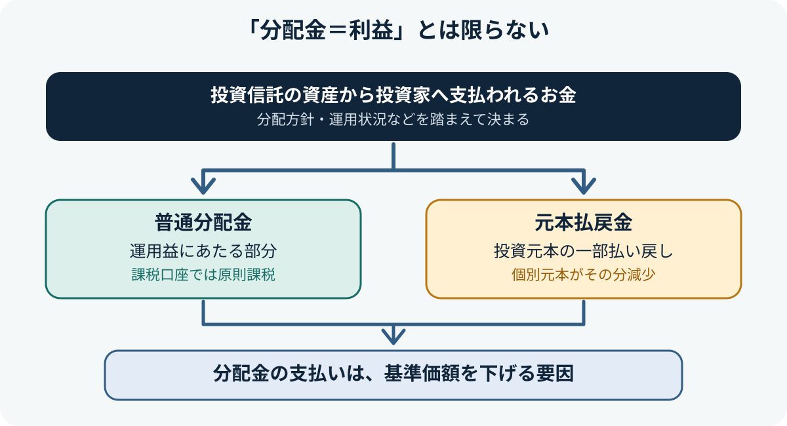
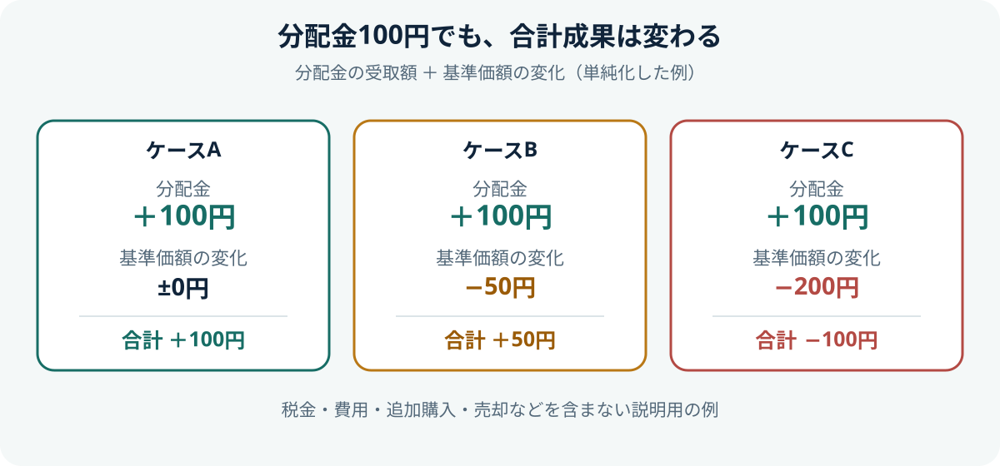

投資信託の分配金とは？普通分配金・元本払戻金と再投資の考え方
分配金は、投資信託の資産から投資家に支払われるお金です。ただし、受け取った金額がすべて運用で得た利益とは限りません。分配金の種類、支払い後の基準価額、受け取りと再投資の違いを理解しておきましょう。

- 分配金が支払われても、その金額だけ運用で利益が出たとは限りません。
- 普通分配金は利益部分、元本払戻金（特別分配金）は個別元本の一部払い戻しにあたります。
- 分配金の受取額だけでなく、基準価額の変化も合わせて運用成果を考えます。
1. 分配金とは？
投資信託の分配金は、決算時などにファンドの資産から投資家へ支払われるお金です。分配するかどうか、いくら支払うかは、商品ごとの分配方針や運用状況などを踏まえて決まります。分配金が出ない投資信託もあります。
分配金は、預金の利息のようにあらかじめ決まった額が必ず支払われるものではありません。支払額が変わることもあり、運用状況によっては支払われないこともあります。
2. 普通分配金と元本払戻金の違い
追加型の株式投資信託などでは、分配金は税務上、主に「普通分配金」と「元本払戻金（特別分配金）」に分けられます。判定には、投資家ごとの税務上の購入価額である「個別元本」と、分配落ち前の基準価額などが関係します。
| 種類 | 意味 | 税金の扱い（課税口座） |
|---|---|---|
| 普通分配金 | 個別元本を上回る部分に対応する分配金。運用益から支払われる利益にあたる | 原則として課税対象 |
| 元本払戻金（特別分配金） | 個別元本を下回る部分に対応する分配金。投資元本の一部払い戻しにあたる | 元本の払い戻しとして非課税。受け取った分だけ個別元本が減少 |
元本払戻金が非課税なのは、税金が優遇される利益という意味ではなく、元本の払い戻しとして扱われるためです。どちらに該当するかは投資家ごとの個別元本によって変わる場合があるため、分配金の名称や金額だけで判断しないようにしましょう。
3. 分配金と基準価額の関係
分配金を支払うと、ファンドの資産からその分のお金が出ていくため、ほかの条件が同じなら基準価額が下がる要因になります。分配金を受け取ったことだけで、保有資産全体が増えたとはいえません。

運用成果を確認するときは、受け取った分配金だけでなく、保有口数に応じた基準価額の変化も合わせて考えます。商品を比較する際は、分配金を含めたトータルリターンなど、同じ条件で比較できる指標を確認しましょう。
4. 受取型と再投資型の違い
| コース | 仕組み | 考えるポイント |
|---|---|---|
| 受取型 | 分配金を現金で受け取る | 生活費などに使える一方、再投資に回す資金はその分少なくなる |
| 再投資型 | 受け取った分配金で同じ投資信託を買い増す | 保有口数を増やし、長期の資産形成に活用できる場合がある |
再投資型でも、必ず資産が増えるわけではありません。投資信託自体の値下がりや費用などの影響を受けます。また、課税口座で普通分配金を再投資する場合は、再投資に回る前に税金が差し引かれるのが一般的です。コースの選択肢や変更条件は販売会社・商品によって異なります。
5. 分配金が多い商品を選べばよい？
分配金の額や頻度が高いことだけでは、運用成績がよいとは判断できません。分配金が多くても、基準価額が大きく下がっていれば、受取額と保有資産の変化を合わせた成果は小さくなったり、マイナスになったりする場合があります。
商品を比べる際は、分配方針、分配金を含めたトータルリターン、基準価額の推移、費用、投資対象、値下がりリスクを確認しましょう。分配金が必要なのか、資産を長期的に育てることを優先したいのか、自分の目的に合う仕組みかを考えることが大切です。
6. NISAでの分配金と税金
NISA口座では、対象となる株式投資信託の普通分配金は非課税になります。一方、元本払戻金（特別分配金）は元本の払い戻しにあたり、もともと課税対象ではないため、NISAの非課税メリットを追加で受けるものではありません。
また、NISAで上場株式やETFなどの配当・分配金を非課税で受け取る場合、商品や受取方法に所定の条件があることがあります。購入先の金融機関や最新の公式案内で確認してください。
7. 購入前に確認したいこと
- 分配方針と、分配金が支払われる頻度
- 普通分配金・元本払戻金の違いと税務上の扱い
- 分配金を含むトータルリターンと基準価額の推移
- 受取型・再投資型のコースと変更条件
- 信託報酬などの費用、投資対象と値下がりリスク
- 最新の交付目論見書、運用報告書、販売会社の説明
公式情報・参考資料
- 資産運用業協会：分配金・換金／償還の知識 — 分配金の仕組み、普通分配金と元本払戻金
- J-FLEC：普通分配金と特別分配金の違いってなに？ — 税務上の基本的な区分
- J-FLEC：分配金あり・なしのタイプのメリットと留意点 — 受取と再投資の考え方
- 金融庁：投資信託の「分配金」とは②（PDF） — 普通分配金と元本払戻金の図解
まとめ
分配金は投資信託から支払われるお金ですが、必ずしも運用益だけから支払われるわけではありません。普通分配金と元本払戻金の違い、支払い後の基準価額、分配金を含む運用成果を確認し、受取型・再投資型を自分の目的に合わせて考えましょう。